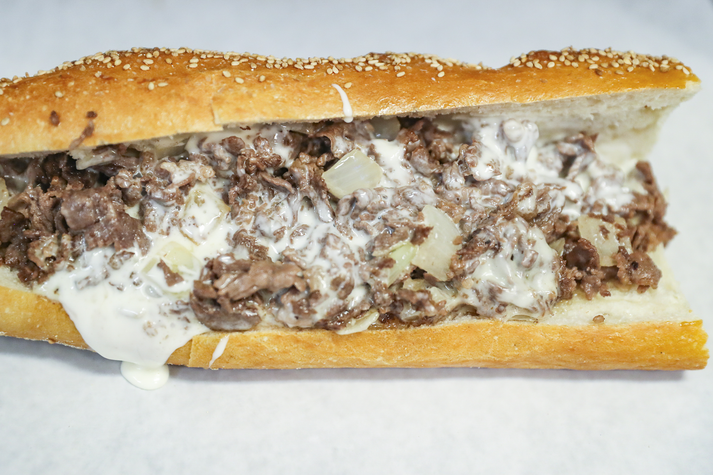

Kansas City Style "Burnt Ends" Cheesesteak

If the Super Bowl is coming up, you can be sure I'm working on some kind of new and exciting party food. Except, there is no such thing as "new and exciting party food." It's all been done, many times over, so I've resorted to combining two, old classics into something I hope is somewhat new and exciting. The latest example is this Philly cheesesteak featuring a cheater version of Kansas City Style "burnt ends."
A cynic might say that this is just the work of a chef who's bitter his team didn't make it, so he's posting a recipe he knows will drive fans from both cities crazy. Well, I can't confirm, or deny that, but I can tell you this experiment was delicious, and very enjoyable to eat. Plus, how often do we get to buy and use cheese whiz?
Ingredients
- 3.5 lbs beef chuck roast (should be very well-marbled)
- 3 tablespoons barbecure dry rub
- .5 cup Kansas City style BBQ sauce
- 4 sandwich or hoagie rolls
- 1 (8 ounce) container cheese whiz, or sliced cheese as needed
- .6 cup sauteed onions
- .6 cup chopped jarred pickled peppers
- 2 tablespoons sliced green onions
Making this bad boy
- Gather all ingredients, and preheat the oven to 325 degrees F (165 degrees C). Season beef with dry rub, and double wrap in foil. Place on a sheet pan or in a baking dish, seam side up, and roast in the preheated oven for 2.5 hours.
- Let rest for 1 hour. Unwrap and transfer to cutting board. Reserve all juices. Cut into 1-inch cubes and transfer to a mixing bowl. Add cooking juices, more dry rub if desired, and bbq sauce. Mix well, wrap and refridgerate overnight.
- Preheat oven to 450 degrees F (230 degrees C). Transfer beef into a shallow baking dish and brush generously with bbq sauce.
- Roast in preheated oven until meat starts to char around the edges, about 1 hour. Remove from oven and brush again with bbq sauce. Reduce oven temperature to 250 degrees F (120 degrees C)
- Roast until the "burnt ends" are as tender as you want, about 1.5 hours more
- Transfer the "burnt ends" onto the rolls, and finish with cheese whiz, onions, peppers, and green onion.
- Serve and enjoy!